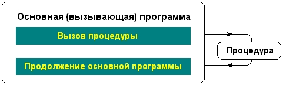

|
|
|
|
Процедуры и функции
Процедуры и функции представляют собой важный инструмент Турбо Паскаля, позволяющий писать хорошо структурированные программы. В структурированных программах обычно легко прослеживается основной алгоритм, их нетрудно понять любому читателю, они проще в отладке и менее чувствительны к ошибкам программирования. Все эти свойства являются следствием важной особенности процедур (функций), каждая из которых представляет собой во многом самостоятельный фрагмент программы, связанный с основной программой лишь с помощью нескольких параметров. Самостоятельность процедур (функций) позволяет локализовать в них все детали программной реализации того или иного алгоритмического действия и поэтому изменение этих деталей, например, в процессе отладки обычно не приводит к изменениям основной программы.
Многие примеры в этой книге невелики по размерам (не более 30-40 строк), поэтому написать такие программы можно и без процедур. Иное дело - создание крупных программ в сотни, тысячи и десятки тысяч строк. Писать такие программы как нечто единое целое, без расчленения на относительно самостоятельные фрагменты, т.е. без структурирования, просто невозможно. Практически во всех языках программирования имеются средства структурирования. Языки, в которых предусмотрены такие механизмы, называются процедурно-ориентированными. К их числу принадлежит и Турбо Паскаль.
Процедурой в Турбо Паскале называется особым образом оформленный фрагмент программы, имеющий собственное имя. Упоминание этого имени в тексте программы приводит к активизации процедуры и называется ее вызовом. Сразу после активизации процедуры начинают выполняться входящие в нее операторы, после выполнения последнего из них управление возвращается обратно в основную программу и выполняются операторы, стоящие непосредственно за оператором вызова процедуры (рис.2.2).

Рис.2.2. Взаимодействие вызывающей программы и процедуры
Для обмена информацией между основной программой и процедурой используется один или несколько параметров вызова. Как мы увидим дальше (см. гл. 8), процедуры могут иметь и другой механизм обмена данными с вызывающей программой, так что параметры вызова могут и не использоваться. Если они есть, то они перечисляются в круглых скобках за именем процедуры и вместе с ним образуют оператор вызова процедуры.
Функция отличается от процедуры тем, что результат ее работы возвращается в виде значения этой функции, и, следовательно, вызов функции может использоваться наряду с другими операндами в выражениях.
С примерами процедур и функций мы уже сталкивались - это стандартные процедуры чтения И записи READ, READLN, WRITE, WRITELN, функции ORD, CHR, математические функции и др. Стандартными они называются потому, что созданы одновременно с системой Турбо Паскаль и являются ее неотъемлемой частью. В Турбо Паскале имеется много стандартных процедур и функций. Наличие богатой библиотеки таких программных заготовок существенно облегчает разработку прикладных программ. Однако в большинстве случаев некоторые специфичные для данной прикладной программы действия не находят прямых аналогов в библиотеках Турбо Паскаля, и тогда программисту приходится разрабатывать свои, нестандартные процедуры и функции.
Нестандартные процедуры и функции необходимо описать, чтобы компилятор мог установить связь между оператором вызова и теми действиями, которые предусмотрены в процедуре (функции). Описание процедуры (функции) помещается в разделе описаний и внешне выглядит как программа, но вместо заголовка программы фигурирует заголовок процедуры (функции).
Не вдаваясь в дальнейшие подробности, попробуем составить собственную процедуру, чтобы пояснить сказанное. Пусть в этой процедуре преобразуется некоторая символьная строка таким образом, чтобы все строчные буквы заменялись соответствующими прописными. В Турбо Паскале имеется стандартная функция UPCASE (см. гл.4), которая выполняет аналогичные действия над одиночным символом. Наша процедура (назовем ее UPSTRING) будет преобразовывать сразу все символы строки, причем сделаем ее пригодной не только для латинских букв, но и для букв русского алфавита.
Разработку программы проведем в два этапа. Сначала сконструируем основную (вызывающую) часть программы. Ее действия очень просты: она должна ввести входную строку (назовем ее Sinp) с клавиатуры, преобразовать ее с помощью процедуры UpString в выходную строку Sout и напечатать результат. Эти действия нетрудно запрограммировать, например:
Program CharsConvert;
Procedure UpString(si: String; var s2: String);
begin {UpString}
s2 := s1 {Пока еще нет преобразования!}
end; {UpString}
var
Sinp, Sout : String; {Исходная и преобразованная строки}
begin {Начало основной (вызывающей) программы}
Write('Введите строку: ');
ReadLn(Sinp); {Вводим исходную строку}
UpString(Sinp,Sout); {Преобразуем ее.к прописным буквам}
WriteLn (' Результат: ',Sout) {Печатаем результат}
end. {Конец вызывающей программы}
В этой программе используется замещение процедуры UPSTRING так называемой «заглушкой», т.е. процедурой, в которой на самом деле не осуществляется нужных нам действий, а выходная строка просто копирует входную. (Однако эта программа синтаксически абсолютно правильна и при желании ее можно запустить на счет.) Заглушка понадобилась нам по двум причинам. Во-первых, приведенная программа очень проста, в ней отсутствует детальная реализация процедуры и это позволяет наглядно проиллюстрировать механизм ее описания. Во-вторых, на ее примере мы знакомимся с универсальным методом конструирования сложных программ, получившим название нисходящее программирование. В соответствии с этим методом создание программы начинается «сверху», т.е. с разработки самого главного, генерального алгоритма. На верхнем уровне обычно еще не ясны детали реализации той или иной части программы, поэтому эти части следует заменить временными заглушками. Желательно, чтобы временный вариант программы был синтаксически правильным, тогда можно его откомпилировать и убедиться в отсутствии в нем синтаксических ошибок. Такой прогон даст определенную уверенность перед разработкой и реализацией алгоритмов нижнего уровня, т.е. перед заменой заглушек реально работающими процедурами. Если реализуемый в заглушке алгоритм достаточно сложен, его вновь структурируют, выделяя главный алгоритм и применяя новые заглушки, и т.д. Процесс продолжается «вниз» до тех пор, пока не будет создан полностью работоспособный вариант программы.
В дальнейшем мы еще не раз будем использовать метод нисходящего программирования, а сейчас вернемся к описанию нашей процедуры. Как видим, это описание начинается зарезервированным словом Procedure, за которым следуют имя процедуры и список формальных параметров. Список параметров заключается в круглые скобки и содержит перечень параметров с указанием их типа. Заметим, что перед параметром s2, с помощью которого в вызывающую программу возвращается результат преобразования, стоит зарезервированное слово VAR. Именно таким способом компилятору указываются те параметры, в которых процедура возвращает вызвавшей ее программе результат своей работы (подробнее см. гл. 8). Зарезервированное слово Procedure, имя процедуры и список ее параметров образуют заголовок процедуры. За заголовком следует тело процедуры, содержащее новый раздел описаний (этот раздел пока еще пуст) и раздел исполняемых операторов (оператор s2 : = s1).
Приступим к разработке алгоритма процедуры. Для этого обратимся к таблице кодировки символов, используемой в ПК (см. прил. 2). В соответствии с этой таблицей коды символов латинских строчных букв от а до z образуют непрерывный массив монотонно нарастающих чисел от 97 до 122, а коды соответствующих им прописных букв - непрерывный массив чисел от 65 до 90. Преобразование строчных латинских букв в прописные, следовательно, состоит в уменьшении кода буквы на 32. Сложнее обстоит дело с символами русского алфавита (кириллицей). В зависимости от принятого способа кодировки русские строчные буквы могут образовывать один сплошной массив (кодировки ГОСТ и MIC), два массива (альтернативная кодировка), несплошной массив (кодировка типа ЕСТЕЛ), неупорядоченный массив (кодировка КОИ-8). Если исключить два последних варианта кодировки, использовавшихся на устаревших ПК, то задача преобразования буквы состоит в том, чтобы к внутреннему коду русской буквы А (для букв от а до п) или к коду буквы Р (для букв от р до я) прибавить разницу в кодах текущего символа и кодах букв а и и. Например, если преобразуется буква б, то к коду А нужно прибавить разницу между кодами а и б, т.е. единицу, в результате получим код буквы Б. Точно так же при преобразовании буквы ф к коду буквы П будет прибавлено число 5 (как разница кодов ф и п), поэтому в результате получится код буквы Ф. С учетом этого можно составить следующий алгоритм реализации процедуры: для каждого символа исходной строки s1 определить, к какому подмассиву a...z, a...p или п...я принадлежит код этого символа, и затем изменить его, добавив к кодам букв А (латинская), А (русская) или Я соответствующую разницу. Если символ не принадлежит ни к какому из подмассивов, нужно поместить его код в выходную строку без изменений.
Вот возможный вариант процедуры:
Procedure UpString(sl: String; var s2: String);
var
i: Integer; {Счетчик цикла преобразования}
с: Char; {Рабочая переменная преобразования}
begin {UpString}
s2 := ' '; {Вначале выходная строка пуста}
{Цикл посимвольного анализа исходной строки}
for i := 1 to Length(si) do
begin
{Берем из входной строки очередной символ}
с := sl[i];
{Проверяем символ на принадлежность к одному из трех подмассивов}
if (с >= 'a') and (с <= 'z') then
с := chr(ord('A')+ord(c)-ord('a1)) {А,а - латинские!}
else if (c >= 'a') and (c <= 'n') then
с := chr(ord('A')+ord(с)-ord('a')) {А,а - русские!}
else if (c >= 'p') and (с <= 'я') then
с := chr(ord('PI)+ord(c)-ord('p'));
s2 := s2+c
end
end; {UpString}
В процедуре вначале с помощью оператора
s2 := '';
подготавливается «пустая» выходная строка, т.е. строка нулевой длины. Затем используется цикл от 1 до длины входной строки s1 (эта длина получается с помощью стандартной функции Length), в ходе которого проверяется принадлежность очередного символа указанным подмассивам и осуществляется необходимая коррекция его внутреннего кода. Для доступа к отдельным символам строки используется замечательное свойство типа данных STRING, позволяющее рассматривать строку как набор (массив) символов. Первый символ этого набора имеет индекс 1, второй - 2 и т.д. Индекс указывается сразу за именем строки в квадратных скобках. Таким образом, s1 [i] -это i-ый символ строки s1. Преобразованный символ добавляется в конец выходной строки.
Добавив комментарии и поместив тело процедуры вместо заглушки в первоначальный вариант программы, получим окончательно ее рабочий вариант (пример 2.10).
Пример 2.10
Program CharsConvert;
{Программа вводит произвольную текстовую строку, преобразует все входящие в нее буквы в прописные и печатает результат преобразования}
PROCEDURE UpString(sl : String; var s2 : String);
{Эта процедура преобразует буквы входной строки si в прописные буквы латинского или русского алфавита и помещает результат преобразования в выходную строку s2. Используется предположение о том, что последовательности латинских букв от «а» до «z» и русских букв. от «а» до «п» и от «р» до «я», а также последовательности соответствующих им прописных букв образуют непрерывные массивы}
var
i: Integer; {Счетчик цикла преобразования}
с: Char; {Рабочая переменная преобразования}
begin {UpString}
s2 :=' ' ; {Вначале выходная строка пуста}
{Цикл посимвольного анализа исходной строки}
for i := 1 to Length(s1) do
begin
{Берем из входной строки очередной символ}
с := s1[i] ;
{Проверяем символ на принадлежность к одному из трех подмассивов}
if (с >= 'a') and (с <= 'z') then
с := chr(ord('А')+ord(c)-ord('a')) {A,a - латинские!}
else if (c >= 'a') and (c <= 'n') then
с := chr(ord('A')+ord(c)-ord('a')) {A,a -русские!}
else if (c >= 'p') and (с <= 'я') then
с := chr(ord('P')+ord(c)-ord('p'));
s2 := s2+c
end
end; {UpString}
var
Sinp, Sout : String; {Исходная и преобразованная строки}
begin {Начало основной (вызывающей) программы}
Write('Введите строку: ');
ReadLn(Sinp); {Вводим исходную строку}
UpString(Sinp,Sout); {Преобразуем ее к прописным буквам}
WriteLn(' Результат: ',Sout) {Печатаем результат}
end. {Конец вызывающей программы}
Рассмотрим иной способ реализации той же программы: оформим алгоритм преобразования в виде функции. Кроме того, с помощью стандартной функции UPCASE преобразуем каждый очередной символ (это преобразование осуществляется только для букв латинского алфавита) и тем самым исключим проверку принадлежности символа к строчным латинским буквам:
Function UpString(s1: String): String;
var
i : Integer; с : Char;
s2: String; {Результат преобразования}
begin {UpString}
s2 := ' ';
for i := 1 to Length(si) do
begin
{Получаем и преобразуем очередной символ}
с := UpCase(si [i]);
if (с >= 'a') and (с <= 'п') then
с := chr(ord('A')+orcKcJ-ord('a'))
else
if (c >= 'p') and (с <= 'я') then
с := chr(ord('P')+ord(c)-ord('p'));
s2 := s2+c
end;
UpString := s2 {Присваиваем значение функции UpString}
end; {UpString}
var
Sinp: String;
begin {Начало основной программы}
Write('Введите строку: ') ;
ReadLn(Sinp);
WriteLn(' Результат: ',UpString(Sinp))
end. {Конец основной программы}
Программа получилась несколько проще за счет того, что функцию можно использовать в качестве параметра обращения к другой процедуре (в нашем случае к WriteLn). Обратите внимание: в теле любой функции нужно осуществить присваивание ей вычисленного значения (см. оператор UpString := s2). В левой части оператора присваивания в этом случае указывается имя функции.
|
|
|
|